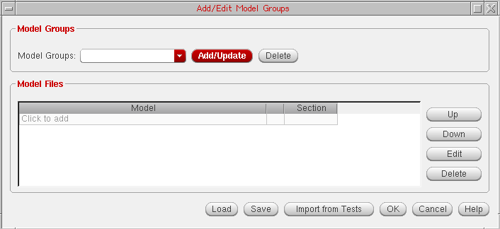
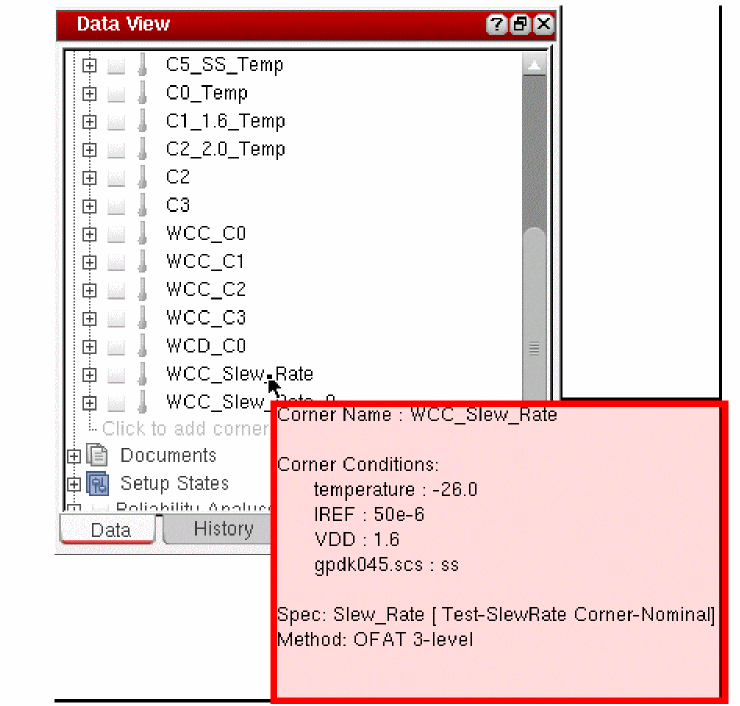

26
Worst Case Corners
A corner is a combination of variables or process models that define a scenario in which you want to measure the performance of your design. For more information about corners, see
When you work with large simulation data, defining corner conditions results in hundreds or thousands of possible corner combinations to run. Therefore, running simulations over all corners becomes time consuming process and also requires large computation resources. Therefore, Worst Case Corners helps to reduce the overall project time devoted to simulation and still provide a high level of accuracy.
By identifying Worst Case Corners, the problem is reduced to a subset of worst case conditions. These worst case corners can then be used in verification and design. In addition, running simulations over a reduced set of corners facilitates design changes to be validated quickly.
This chapter covers the following topics to describe how to use the Worst Case Corner analysis in ADE Assembler:
- Prerequisites for Setting Up the Worst Case Analysis
- Specifying the Worst Case Corner Analysis Setup
- Running Worst Case Corners
- Validating Worst Case Corners
- Creating Worst Case Corners Automatically
- Viewing Worst Case Corners
Prerequisites for Setting Up the Worst Case Analysis
Before you create worst case corners, perform the following steps:
- On the Run toolbar, in the Select a Run Mode drop-down list, select Worst Case Corners.
- If you want to vary variables, ensure that you have specified variables in the Variables and Parameters assistant.
-
On the Outputs Setup tab, select the required spec and ensure that for each spec, you specify an objective type and a target value. Worst case corners are created only for the relevant specs.
Specifying the Worst Case Corner Analysis Setup
After you select the run mode, click the Simulation Options button to specify the worst case corner setup.
The Worst Case Corners form appears as shown in the figure below.
In the Worst Case Corners form, specify the settings that you want to use while running the sensitivity analysis to identify the worst case corners. In this form, you can specify the Temperature, variables, and models that you want to vary and also specify the method by which you want to vary them.
The various form fields are explained in detail in the following sections:
- Choosing a Method
- Importing Values from the Corners Setup
- Specifying Temperature
- Specifying Global Variables
- Specifying Parameters
- Specifying Model and Model Groups
Choosing a Method
In the Method field, specify the method (algorithm) by which you want to vary the variables. Depending upon the method you specify in this field, the tool, decides how many and which combination of variables are to be simulated.
Following are the five available methods:
-
OFAT 3-level- In this method, the tool varies each factor for three values. For example, the values of temperature can be specified as-40,27,85with the nominal value equal to27. If, instead of three points, you specify a range of values, the tool chooses the following three values of the variable for simulation:
For example, if the Temperature range is-40:10:120(-40in steps of10degrees to maximum value of120) and the nominal value is27, the three values used by the tool are:-40,27,120. -
OFAT Sweep- In this method, the tool varies each factor for the specified sweep values. You can either specify sweep values as a range in themin:step:maxsyntax or as a set of space-separated values. -
Central Composite Design- This method is similar to OFAT 3-level, but more accurate in the case of interactions among the corner variables. In addition to the points simulated by OFAT 3-level, Central Composite Design simulates the max and min values together for every pair of variables. This method does not simulate all model section values and simulates only first, nominal, and last values. Choose a different method if you want to take all model sections into account. -
2^K Factorial- This method simulates all possible combinations of the min and max variable values. Use this method to capture interactions of variables at their extreme values. -
Full Factorial- This method simulates all possible combinations. -
Automatic- This method calculates the worst case corners automatically without manually specifying methods. For more details, see Creating Worst Case Corners Automatically.
The first three algorithm methods, OFAT 3-level, OFAT Sweep, and Central Composite Design, are termed as Response Surface Methods (RSM), which means in these methods, a polynomial model is created and values for each corner variable is chosen based on the fact whether the specified value fits into the model. The worst case corner is the combination of variable values that are not simulated. As a result, after the worst case corner is created, the tool performs the corner validation for these methods.
For the 2^K Factorial and Full Factorial methods, the tool determines the worst case corner from the simulated combination values. The combination that gives the worst result for each spec is identified as the worst case corner.
When you create a statistical corner from a given spec and then run Worst Case Corner simulation using OFAT, Central Composite Design, or Factorial methods to create worst case corner for other variables, then the worst case corner is created only for the spec for which the statistical corner was created. When the automatic method is used, the worst case corner is created for each enabled PVT or statistical corners.
The following table outlines the comparison between these five methods that helps you choose an appropriate method to get the desired results:
| Methods | Accuracy | Simulation # (M parameters with N1, N2,...,Nm levels) | Example Simulation # (10 parameters with 3 level each) | Limitations |
To better understand these method, consider the following example:
Suppose you have three variables, var1, var2, and var3, with the following values:
Var3: Val1, Val2, No, Val3, Val4
OFAT 3-Level
If you run the OFAT 3-Level method, the table below describes the combination of variables that are simulated for this run.
| Point | Var1 | Var2 | Var3 |
OFAT Sweep
If you run the OFAT Sweep method, the table below describes the combination of variables that are simulated for this run.
| Point | Var1 | Var2 | Var3 |
Central Composite Method
If you run the Central Composite Design method, the table below describes the combination of variables that are simulated for this run.
| Point | Var1 | Var2 | Var3 |
2^K Factorial
If you choose the 2^K FActorial method, the table below describes the combination of variables that are simulated for this run
| Point | Var1 | Var2 | Var3 |
Full Factorial
The Full Factorial method includes the 45 combinations of variables. This is the most accurate method.
Determining the Number of Data Points
The No of Points label to the right of the Method field displays the total number of data points for which simulation is to be run. The tool calculates these data points based on the algorithm selected in the Method drop-down list, nominal value and the range of parameter values. Normally, the tool dynamically changes the value of this label.
Importing Values from the Corners Setup
In the tabular format given in the centre of the form, specify the variables that you want to vary during the analysis. If the corners are already defined in the Corners Setup form, you can use the Import from Corner Setup command to directly import all or selected variables from the existing setup. When you click this button, the following two options appear:
- Enabled Corners—Select this option to import only enabled corners from the Corner Setup form.
- All Corners—Select this option to import all the corners that are present in the Corner Setup form.
Specifying Temperature
To vary temperature, specify values for temperature in the Value cell. To import the value of temperature from all the corners, right-click in the Value column and choose Import from All Corners (refer the figure below).
Type a nominal temperature value in the Nominal cell for temperature or double-click in the cell to open the drop-down list. All the values specified in the Value cell are displayed in the list. Select a nominal temperature value from this list. The nominal value should be in the given value list. If you type a nominal temperature value that is not in the specified value list, that value is not accepted by the form.
Alternatively, you can get the value of temperature from the test. For this, right-click in the Nominal cell for temperature and choose Get Value from Test. If the value taken from the test does not exist in the Value cell, the tool automatically creates an inclusion list to add the nominal value to the existing values.
Specifying Global Variables
To specify global variable values:
A drop-down list containing variables is displayed. Select the required variables from this list. The tool reads the range of values from the active setup in ADE Assembler and displays them in the Value column. The tool also reads the value of that variable from the test and if that value is one of the values in the Value column, displays the same in the Nominal cell.
ALL option from the drop-down list that appears when clicking Click to add.
For example, in the above figure, the value for IREF in the test is 56u, which is there in the value list. Therefore, the tool automatically fills that value in the Nominal cell. However, for VDD, the value in the test is 2.0, which is not in the given value list. Therefore, no value is displayed in the Nominal column. In this case, you can choose to get the nominal value either from the test or a setup state. For that, right-click in the Nominal column and choose an appropriate option. If the value taken from any of these sources does not exist in the Value cell, the tool automatically creates an inclusion list to add the nominal value to the existing set of values in the Value cell.
Specifying Parameters
A drop-down list containing the parameters is displayed. Select the required parameters from this list. Similar to the global variables, the tool reads the range of values and design value for the selected parameters from the Variables and Parameters assistant and displays them in the Value and the Nominal column. Similar to the global variables, if the nominal value is not one of the values in the Value column, the Nominal cell is blank. You need to fill in that value.
To change the parameter values, double-click in the Value column and edit the values by specifying a range or a list of space-separated values. Alternatively, you can select one or more values and right-click to display the shortcut menu and choose:
- Import from All Corners to import values defined for all corners in the Corner Setup form.
- Import from Enabled Corners to import values from defined for the enabled corners in the Corner Setup form.
- Import Min, Max from Active to load only the minimum and maximum values defined in the Data View or the Variables and Parameters assistant.
- Import from Active to load the values defined in the Data View or the Variables and Parameters assistant.
- Set Sweep/Value to edit the exclusion/inclusion list.
If required, you can change the nominal value for variables. The default nominal value is taken from the values of the parameter in the design. To change the nominal value for a variable or parameter, double-click in the Nominal cell for the variable or parameter. A list of possible nominal values is displayed. You can either select a value from the list or edit the value.
Specifying Model and Model Groups
-
Click
Click to addin the Model section in the table.
The Add/Edit Model Files form appears, in which you can specify the model files.
-
Click
Click to addin the Model Group(s) section in the table.
The Add/Edit Model Group form appears, as shown in the figure below:
- In the Model Groups drop-down, select the model groups that you want to vary for the simulation.
- In the Model Files panel, browse and select a model file for which you want to vary different sections. The name of the file appears in the cell.
- Select a section that you want to add to the list. You can select multiple sections that you want to vary for the model file.
- Click the Import from Tests button to import the model files directly from the test.
- Click OK.
For more information about the fields in this form, see Adding Model Files to a Corner.
To add a nominal value, double-click in the Nominal cell and select name of a section that you want to use as a nominal value for the selected model file.
The setup required for creating worst case corners is complete.
Running Worst Case Corners
After the worst case corner variables and methods have been specified in the Worst Case Corner form, click the Run Simulation button on the Run toolbar to run the simulation for the specified corners.
Below is a step-wise description about the basic tasks that are performed when a worst case corner simulation is run and the worst case corners are evaluated. These steps help you find out whether the design meets the specification across all corners before running a large number of simulations.
- In the first step, the worst case corners are created by generating and simulating the design samples for the specified set of parameter values. You can use different algorithms to generate the worst case corners. For more information about the available algorithms, see Choosing a Method.
- Then, the simulation is run for the specified parameter and values. If you have chosen an RSM algorithm in the Worst Case Corner form, the tool generates the predicted results and validates the obtained simulation results against the predicted results. For more information about the results validation, see Validating Worst Case Corners.
- Now, the simulated results generated from the previous step are compared with the predicted result expressions. If the generated results do not match the predicted results, you can use a different algorithm and rerun the worst case corner simulation to achieve the desired results. This makes the process faster because you are not required to run all the simulations again if you use an RSM algorithm.
- The above steps are then repeated to predict the values for all remaining corners. All the expressions are evaluated and then the simulation is run for all the combination sets.
When the Full Factorial method is used to create worst case corners, the simulation first checks if all specifications have been failed in the run, instead of only checking the test status because it can have partially failed specs too. Those specifications are ignored for which all the points have been failed and a message is displayed in the run log. In this case, the first failed point is considered as the worst case point.
Related environment variable: warnWhenWCCSimsExceed
Validating Worst Case Corners
If you have selected an RSM algorithm, such as OFAT 3-Level, OFAT Sweep, or Central Composite Design, the tool generates a set of predicted results and then validates these results against the results obtained from the actual simulation run.
Refer to the following sections to know more about how the worst case corners are validated:
Viewing Validation Results Using Run History
To view the history information for a particular simulation run, click the History tab. The histories of the previous simulation run are displayed in the Data View assistant. The history name for a particular simulation run includes the name of the run mode.
Alternatively, you can click the history tabs displayed at the bottom of the Results window.
To view the history for a previous worst case corner run, expand WorstCaseCorners.1 as shown in the figure below.
If you selected an RSM method, such as OFAT 3-level, OFAT Sweep, or Central Composite, the worst case corner simulation run creates a group run with child histories. To view child histories, expand the History Children section as shown in the figure above. The following two histories are displayed under this section:
In the first child run, the samples are generated and simulated to create the worst case corner. This run also generates the predicted result expressions for each corner if an RSM algorithm is used.
In the second child run, the worst case corners are simulated and validated against the predicted results. The validation is performed only if you have selected a RSM algorithm in the Worst Case Corners form.
In the second child history tab, the predicted worst case corner value is calculated for all corners and is displayed for each test in a separate row in the results window. The figure below shows the predicted and generated corners for SlewRate.
In this figure, the Output column displays two values for the Test, SlewRate, Slew_Rate and Slew_Rate_I:predicted.
In the next step, the simulated value for the test that has been generated after simulating the worst case corners is compared against the corresponding predicted value, and then the difference between these two values is calculated. If the test output includes a range spec, two worst case corners are created, one for the high value range and the other for the low value range. Similarly, two predicted results values are generated for high and low value ranges, respectively.
When you select to display the results in the Detail and Detail-Transpose view, a tooltip appears when you move the mouse pointer on the parameter values.
Viewing Validation Results Using Log File
A log file is created while a simulation for the worst case corners is running. This log file maintains a record of all the tasks that the tool performs during the worst case corner run (as shown in the figure below). This log file displays the difference between the actual simulated value and the predicted value and the error relative to the total range of simulated values, which provides you a hint about whether the worst case corner run was successful.
If the relative error is greater than 10% of the total range of simulated values, the tool displays a message in the log file that suggests you to use another alogrithm to get more accurate worst case corners. For example, in the figure above, the tool suggests you to use the OFAT Sweep algorithm to get the optimal results. You can then change the method in the Worst Case Corners form and rerun the simulation.
The approach described above is followed for all set of corners.
Creating Worst Case Corners Automatically
The Automatic method enables you to find worst case corners without manually specifying the algorithm to generate accurate worst case corners. It accurately and efficiently identifies worst cases corners for a wide range of applications. If you do not know which algorithm you need to apply to find worst case corners, it is recommended that you use the Automatic method, which finds all the worst case corners efficiently and generates worst case corners accurately by running fewer simulations.
To generate worst case corners using this method, select the Automatic option from the Method drop-down list in the Worst Case Corner form.
When you use this method, the tool performs the following tasks:
- Runs OFAT sweep method.
- Runs fractional factorial design on the important variables based on OFAT results.
- Runs local optimization based on the worst case corner from OFAT and fractional factorial samples.
The worst case corners are generated and displayed in the Corners Setup form. For more details about different ways of viewing worst case corners, see Viewing Worst Case Corners.
The figure below displays the run log generated after the simulation run is complete.
For each test enabled in the setup, the run log displays the details of the worst case corners created and the total number of points simulated during the run.
From the information displayed at the end of the run log, you can determine that the Automatic method required a much lesser number of simulation runs as compared to the Full Factorial method.
When the method used is Automatic, you can also create worst case corners for a given specification by using the Sensitivity Analysis results. These results are generated after the Worst Case Corners simulation run is complete.
In the Sensitivity Analysis window, right-click in a cell and choose Create Worst Corners. The worst case corners are created for the selected specification and displayed in the Corner Setup form. This option can be used to re-create worst case corners when the previously generated corners are deleted.
Viewing Worst Case Corners
Worst case corners are created for every specification and are indicated by the prefix WCC. You can view worst case corners by doing one of the following:
- Viewing Worst Case Corners in the Corners Setup Form
- Viewing Worst Case Corners in the Data View
- Viewing Results in Sensitivity Analysis Window
Viewing Worst Case Corners in the Corners Setup Form
In the Corners Setup form, a tooltip displays the spec and method that has been used to create the worst case corners. Move the cursor on a worst case corner name to view the tooltip, as shown in the figure below.
Viewing Worst Case Corners in the Data View
To view the worst case corners from the Data View assistant pane, follow these steps:
- In the Data View assistant pane, click the Data tab.
- Expand the Corners tree.
-
Point to a worst case corner name, such as
WCC_SlewRate.
A tooltip, as shown in the figure below, displays the spec and method used for creating the worst corners.
Viewing Results in Sensitivity Analysis Window
The Sensitivity Analysis window opens up automatically when the simulation run is complete. This window displays the results generated from the actual simulation data. The results, which are the relationship between each measurement and the parameter that you change, are displayed in a separate row. By default, the result is displayed in the percentage format.
When you double-click a value displayed in the cell, the Virtuoso Visualization and Analysis XL window appears displaying the plots for the selected measurement value. For example, if you double-click the IREF and Slew_Rate Nominal cell, the following graph shown in the below figure appears. This graph displays the regression and correlation coefficient values for the selected measurement results.
Specifying the Number of Best Design Points to be Saved
When you specify the number of design points that are to be saved during a optimization run, the same setting is applied to the worst case corners run. This means only the specified number of best design points are saved in the database after the run is complete and not all the design points.
To specify the number of best design points that are to be saved during a optimization or worst case corners run:
In this form, in the Design Points per Optimization Run section, select the Save best design point(s) check box and specify the number of best design points to be saved.
Alternatively, to save all the design points in the database, select the Save all design points option.
Return to top